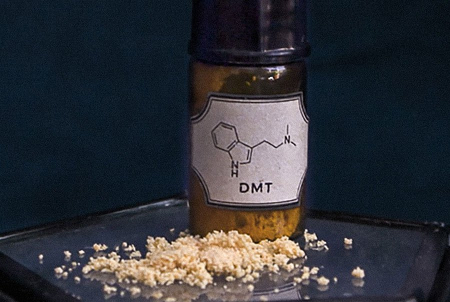

DMT extraction from plant material

Overview
Plant material will be added to a Water/NaoH mixture. This will break down the plant cells and release dmt to the solution
Naptha will be added and mixed gently. The DMT moves into the naptha
Naptha can be pippeted out into a jar/plate. The naptha evaporates leaving DMT crystals behind
Link to Wikipedia
Ingredients
- 600ml water (maybe distilled if your tapwater has additives)
- 50g mimosa hostilis root bark powder(Or any dmt containing leaves)
- 50g Sodium Hydroxide (NaOH, used as dry lye drain cleaner)
- 100ml naphtha/lighter fluid
Method
- Carefully(!) stir 50g Sodium Hydroxide into water (never the other way!). it heats up. wait to cool a bit.
- Stir in 50g mimosa powder and wait 1 hour.(longer the better)
- Add 100ml of naphtha
- Gently roll it over for 1 minute (do NOT shake!) and then Let it settle into 2 layers for like 8 min.
- Repeat previous step 2 more times.
- Suck clear top naphtha layer (no dark liquid!) with pipette. Collect in jar. The naphtha contains the dmt.
- Put the jar into freezer for 8 hours or more.
Return to homepage